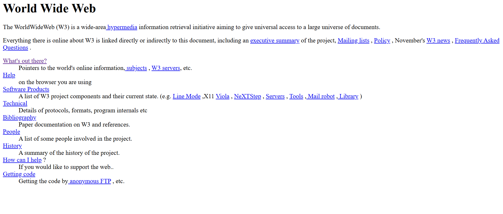

The Start of Websites
The early web was created by Tim Berners-Lee in 1989 while working at CERN in Switzerland. The first ever website was up and running in 1991.

Click to visit the first website created:Origins of The Web
Before the web, the internet primarily existed as a tool for academics and emailing. Berners Lee created the web browser and web server himself.
Early Browsers
One of the first browsers was the Mosaic browser released in 1993. It was the first to display images beside text. Netscape Navigator quickly took over the number one spot in 1994. Microsoft entered the market in 1995 with internet explorer. The events of this timeline was known as browser wars.
Timeline of Browsers
- 1990 - WorldWideWeb
- 1993 - Mosaic
- 1994 - Netscape Navigator
- 1995 - Internet Explorer
- 1996 - Opera
Major Events In 1990s
Timeline of the Early Web
| Year | Event |
|---|---|
| 1989 | Tim Berners-Lee proposes the World Wide Web at CERN |
| 1991 | First website goes live at info.cern.ch |
| 1993 | Mosaic browser released — first to display inline images |
| 1994 | Netscape Navigator launches, W3C founded |
| 1995 | Internet Explorer 1.0 released by Microsoft |
| 1996 | CSS 1.0 published as a W3C recommendation |
| 1998 | Google launches, HTML 4.0 released |
Early HTML
HTML 1.0 launched with fewer than 20 tags. There was no CSS at all and visual styling was applied directly through HTML attributes such as bgcolor, color, and align. Layouts were built using nested tables.